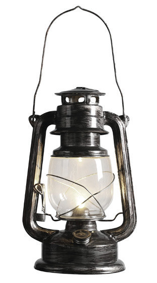
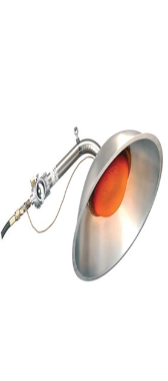
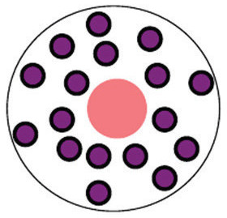
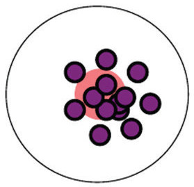
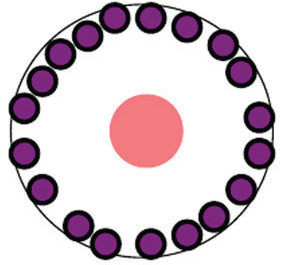
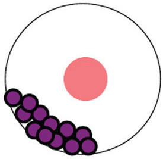

Temperature and humidity in a brooder have to be properly managed for chicks to live comfortably. This can be achieved by using an accurate thermometer and hygrometer (preferably digital) to measure the temperature and humidity during the process regularly. Temperature and comfort in the brooder can be monitored by observing the response or behaviour of chicks to the brooder temperature and other conditions, for example, chicks’ distribution as shown in Figures 9.11 (a) to (d).



